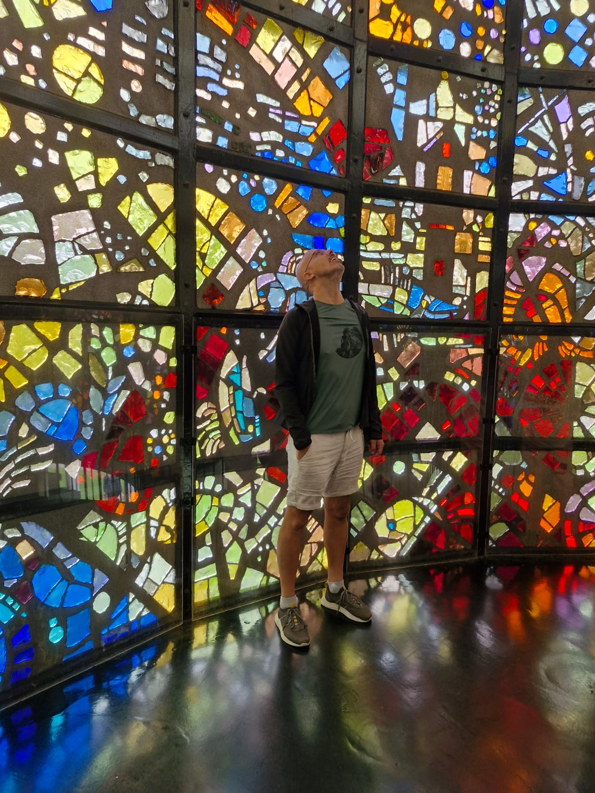
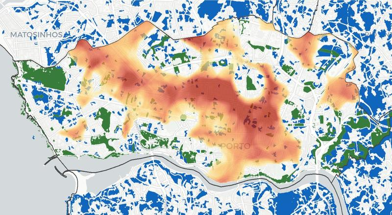
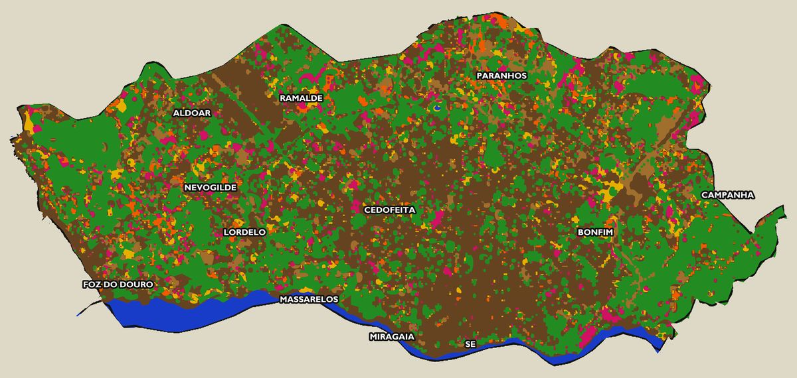

Nuno Quental
«Uma gestão urbanística correcta faz-se com a preservação, antes de mais, dos espaços verdes existentes.»
Sustentabilidade urbana, energia e território.

Porto Verde
Mapas interactivos de vegetação, uso do solo e mudanças urbanas na cidade do Porto, com dados de satélite abertos. Como mudou a paisagem verde da cidade desde 1947?
Explorar o projecto →Últimos artigos


Sobre mim
Do Porto a Bruxelas, passando pela Alemanha e por um doutoramento no Instituto Superior Técnico — o meu percurso profissional tem sido dedicado às questões que moldam o território onde vivemos: a qualidade do ar, os espaços verdes, a forma como nos deslocamos, a energia que consumimos.
Trabalho na Comissão Europeia desde 2016, onde acompanho start-ups inovadoras no European Innovation Council. Antes, coordenei prioridades europeias de I&D em energia eólica e contribuí para instrumentos financeiros como o InnovFin. No Porto, coordenei o plano estratégico de ambiente da Área Metropolitana, fundei a ONG Campo Aberto, e co-apresentei o Desafio Verde na RTP2.